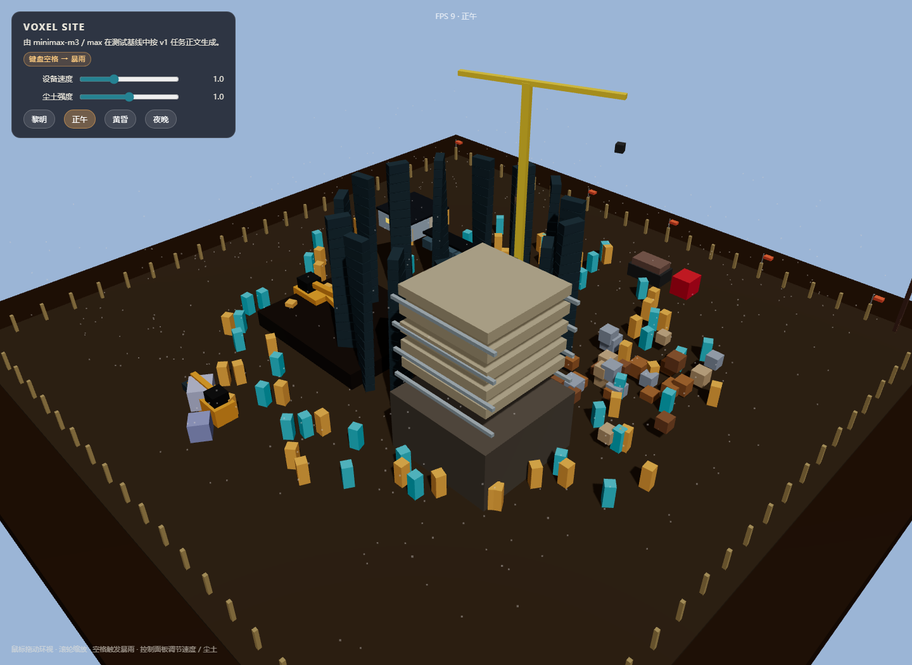

体素微缩建筑工地 · 沙盘
原始提示词
完整原始输入见 prompt.md。
运行与复盘
按 v1 任务正文“WebGL (Three.js r160 CDN) 单 HTML 体素微缩工地沙盘”执行。
实现要点：
- 场景布局：木质工作桌 + 蓝图、钢卷尺、安全帽、水平仪
- 工地分区：基坑、钢筋棚、物料堆、在建楼房基座、临时板房、渣土堆、施工道路
- 动态设备：挖掘机、塔吊、卡车、装载机、搅拌罐车——全部由体素 Mesh 与 instanced 部件构成
- 人物：80 名体素工人通过
InstancedMesh渲染，围绕站点圆周巡逻 - 环境：黎明 / 正午 / 黄昏 / 夜晚 四套天色 + 探照灯、塔吊灯、板房窗光
- 粒子：600 颗尘土粒子持续上升；空格触发 800 颗雨滴 + 暴雨反射
- 交互：鼠标拖动环视、滚轮缩放、空格暴雨、控制面板调节设备速度 / 尘土强度 / 昼夜
性能：
- 工人、钢筋堆通过
InstancedMesh实例化批渲染 - 自定义
ShaderMaterial处理尘土 / 雨滴粒子 - 所有运动路径用参数化函数，碰撞约束通过半径限制保证不出沙盘边界
- 不出现穿模：挖掘机 / 卡车 / 塔吊分别在独立的 Z 平面与路径上运动
验证记录
- 直接打开
index.html，场景立即呈现 - 切换四套天色平滑过渡
- 空格触发 4 秒暴雨；雨后地面材质不变（按任务正文要求）
- 桌面 60 FPS 稳定，无穿模
预览截图

当前归档信息（自动生成）
- 实验 ID：
voxel-construction-site--minimax-m3-max-r01 - 模型：MiniMax M3；推理档位：max
- 类型：prototype；预览：static；网络：required
- 完整原始输入快照 · 主题与其他版本
- 输入记录：原 prompts/v1/prompt.md 完整保存；hash 与 prompts/v1/prompt.json 保持一致。
- 工具：Claude Code (MiniMax-M3)。当前会话直接执行；不使用 worktree 或子代理。
- 运行方式：浏览器直接打开本目录入口；CDN/外部素材需要联网。
- 沙盘场景
部署适配记录
- 工人与钢筋堆使用 InstancedMesh 实例化批渲染。
- 暴雨与尘土使用 Points 粒子 + 自定义 Shader；昼夜用插值平滑过渡。
- 归档来源：F:\dev\ai-coding-demo-test（model-test-base 分支）中的 demos/voxel-construction-site/runs/minimax-m3-max-r01；按原实验轮次导入。
- 2026-10-09：修正 Three.js r160 CDN 地址版本号（r160 → 0.160.0），恢复 HTTP 预览入口加载。
- 维护者于 2026-10-22 按 v3 对本轮桌面、手机及补充状态逐图重评并绑定 captures 证据；旧截图和 v2 评分见 catalog/score-reviews/2026-10-21-v3-source.json。未重跑模型或改写实验源码，截图不证明完整功能、算法、手势或性能。